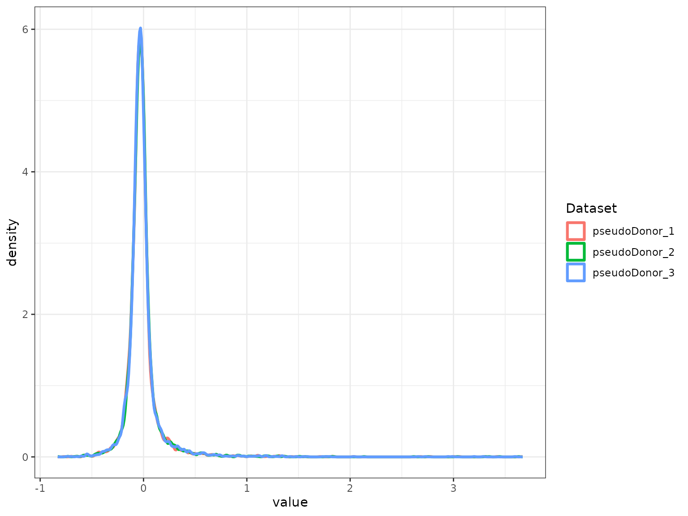
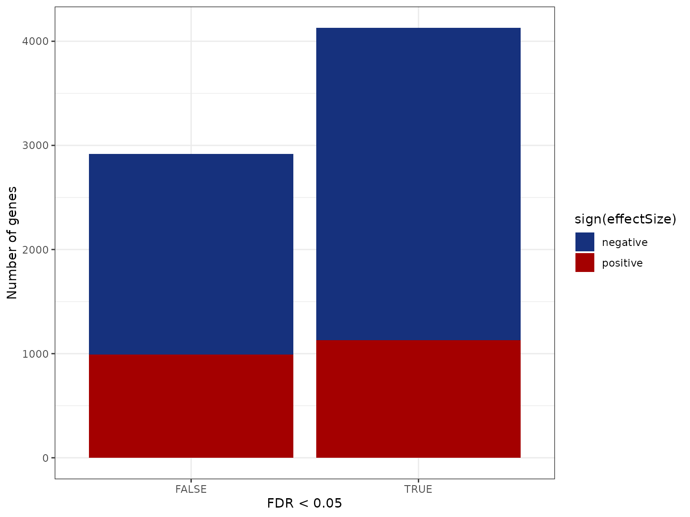
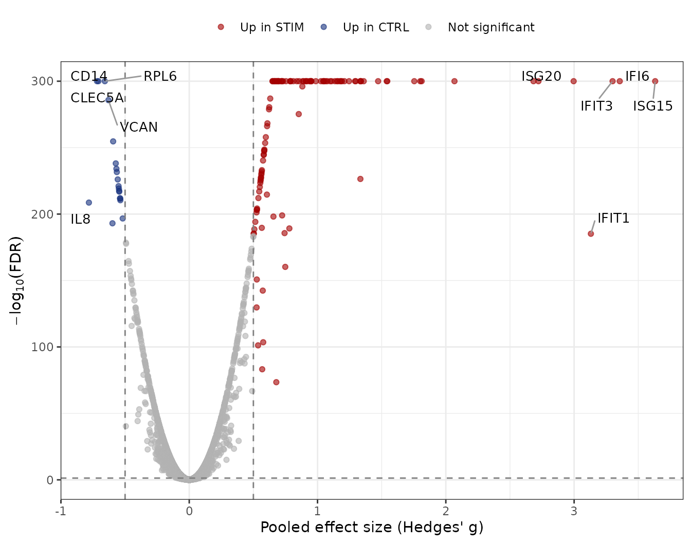

Example 1: Differential expression with runscMI()
Kalani Ratnasiri
2026-10-19
Source:vignettes/Example1_scMetaIntegrator.Rmd
Example1_scMetaIntegrator.RmdOverview
This example runs a complete scMetaIntegrator (scMI) analysis on a
public dataset and returns a table of differentially expressed genes
(DEGs). It uses runscMI(), the simplest entry point.
runscMI() returns one row per gene with the pooled effect
size and its significance. Example 2 shows how to get the full
MetaIntegrator object for forest plots and gene scores.
scMI is designed for paired designs, such as where the same donor is measured under two conditions. Each donor is analyzed as its own study, and the results are pooled across donors with random-effects meta-analysis. This keeps the donor as the unit of replication and avoids treating cells from one donor as independent replicates.
The workflow has four steps:
| Step | Function | Purpose |
|---|---|---|
| 1 |
NormalizeData() and metadata setup |
Prepare a log-normalized Seurat object with a sample, a pairing and a condition column |
| 2 | confirmPairs() |
Check that every pair has exactly two samples |
| 3 | thresholdGenesAcrossPairs() |
Keep genes expressed in at least 1% of cells in every pair |
| 4 | runscMI() |
Pool per-pair effect sizes into one result per gene |
Setup
The example data come from the ifnb.SeuratData package.
Install it once if you do not have it.
install.packages("https://seurat.nygenome.org/src/contrib/ifnb.SeuratData_3.0.0.tar.gz",
repos = NULL, type = "source")Loading MetaIntegrator is required to run scMetaIntegrator. ggplot2 and ggrepel are only used for the plots at the end.
Step 1: Load and preprocess the data
The ifnb dataset contains PBMCs that were either
stimulated with interferon beta (STIM) or left as controls
(CTRL). The dataset does not record donors, so we assign
each cell to one of three pseudo donors. This gives us a pairing
variable for the demonstration. In your own data, use the real donor or
patient ID.
scMI needs three metadata columns:
| Column | What it holds | Column in this example |
|---|---|---|
| Unique sample ID | One value per sample | sample |
| Pairing variable | The value shared by the two samples of a pair | pseudoDonor |
| Comparison variable | The two conditions to compare | stim |
scMI also needs log-normalized expression in the data
layer, which NormalizeData() creates.
data("ifnb")
ifnb = UpdateSeuratObject(ifnb)
ifnb = NormalizeData(ifnb)
## assign cells to three pseudo donors in turn, then build a unique sample ID
ifnb$pseudoDonor = paste0("pseudoDonor_", rep(1:3, length.out = ncol(ifnb)))
ifnb$sample = paste0(ifnb$pseudoDonor, "_", ifnb$stim)
table(ifnb$pseudoDonor, ifnb$stim)
#>
#> CTRL STIM
#> pseudoDonor_1 2183 2484
#> pseudoDonor_2 2183 2483
#> pseudoDonor_3 2182 2484Step 2: Confirm the pairing structure
confirmPairs() returns TRUE when every pair
has exactly two samples, one per condition. If it returns
FALSE, use completePairSubset() to keep only
the complete pairs, or set completePairsOnly = TRUE in
runscMI().
confirmPairs(ifnb, uniqueSampleID = "sample", pairingColumn = "pseudoDonor")
#> [1] TRUEStep 3: Filter lowly expressed genes
Genes that are barely detected add noise and extra tests.
thresholdGenesAcrossPairs() keeps genes detected in at
least 1% of cells in every pair. Passing the result to
runscMI() restricts the analysis to those genes.
thresholdedGenes = thresholdGenesAcrossPairs(
seuratObject = ifnb,
uniqueSampleID = "sample",
pairingColumn = "pseudoDonor",
percentThreshold = 0.01
)
length(thresholdedGenes)
#> [1] 7043Step 4: Run scMetaIntegrator
groupOne is the condition whose effect you want to
estimate, and groupTwo is the reference, usually the
control. A positive effect size means higher expression in
groupOne.
scMI_output = runscMI(
seuratObject = ifnb,
uniqueSampleID = "sample",
pairingColumn = "pseudoDonor",
comparisonGroupColumn = "stim",
groupOne = "STIM",
groupTwo = "CTRL",
thresholdGenes = thresholdedGenes
)
#> Generating full MA object
#> Running meta-analysis
#> Found common probes in 2
#> Found common probes in 3
#> Computing effect sizes...
#> Computing summary effect sizes...
#> Computing Fisher's output...
head(scMI_output[order(scMI_output$effectSizeFDR), ])
#> gene effectSize effectSizeFDR effectSizePval effectSizeBF numPairs
#> APOBEC3A APOBEC3A 0.9110546 0 0 0 3
#> B2M B2M 1.0527816 0 0 0 3
#> BST2 BST2 1.0760492 0 0 0 3
#> CCL8 CCL8 0.9505989 0 0 0 3
#> CD14 CD14 -0.7080852 0 0 0 3
#> CD38 CD38 0.7017553 0 0 0 3The output has one row per gene with these columns:
| Column | Meaning |
|---|---|
gene |
Gene name |
effectSize |
Pooled effect size (Hedges’ g) across pairs |
effectSizePval |
P-value of the pooled effect size |
effectSizeFDR |
Benjamini-Hochberg adjusted p-value |
effectSizeBF |
Bonferroni adjusted p-value |
numPairs |
Number of pairs that contributed to the estimate |
Step 5: Check and visualize the results
Bar plot of DEGs
scMI_output$direction = ifelse(scMI_output$effectSize > 0, "positive",
ifelse(scMI_output$effectSize < 0, "negative", "zero"))
scMI_output$significant = scMI_output$effectSizeFDR < 0.05
ggplot(scMI_output, aes(x = significant, fill = direction)) +
geom_bar() +
scale_fill_manual(values = c(positive = "#A40000FF", negative = "#16317DFF", zero = "grey60")) +
labs(x = "FDR < 0.05", y = "Number of genes", fill = "sign(effectSize)")
Volcano plot of DEGs
The volcano plot shows the pooled effect size against the significance of each gene. Genes with an FDR below 0.05 and an absolute effect size above 0.5 are colored. We label the five genes with the largest effect size in each direction. FDR values of 0 are set to 1e-300 so they can be plotted on a log scale.
volcano_df = scMI_output
volcano_df$neg_log10_fdr = -log10(pmax(volcano_df$effectSizeFDR, 1e-300))
volcano_df$category = ifelse(volcano_df$effectSizeFDR < 0.05 & volcano_df$effectSize > 0.5, "Up in STIM",
ifelse(volcano_df$effectSizeFDR < 0.05 & volcano_df$effectSize < -0.5, "Up in CTRL",
"Not significant"))
volcano_df$category = factor(volcano_df$category,
levels = c("Up in STIM", "Up in CTRL", "Not significant"))
## label the top 5 genes by effect size in each direction
sig_df = volcano_df[volcano_df$category != "Not significant", ]
label_df = rbind(head(sig_df[order(-sig_df$effectSize), ], 5),
head(sig_df[order( sig_df$effectSize), ], 5))
ggplot(volcano_df, aes(x = effectSize, y = neg_log10_fdr, color = category)) +
geom_point(alpha = 0.6, size = 1.5) +
geom_vline(xintercept = c(-0.5, 0.5), linetype = "dashed", color = "grey50") +
geom_hline(yintercept = -log10(0.05), linetype = "dashed", color = "grey50") +
geom_text_repel(data = label_df, aes(label = gene),
color = "black", size = 3.5, max.overlaps = Inf,
box.padding = 0.5, segment.color = "grey60") +
scale_color_manual(values = c("Up in STIM" = "#A40000FF",
"Up in CTRL" = "#16317DFF",
"Not significant" = "grey70")) +
labs(x = "Pooled effect size (Hedges' g)",
y = expression(-log[10](FDR)),
color = NULL) +
theme(legend.position = "top")
Next steps
Example 2 uses generateFullMA() to return the full
MetaIntegrator object. It shows forest plots, gene scores and
leave-one-out filtering. The function reference documents every
argument.